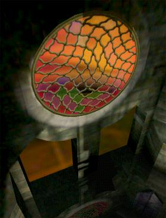

CONCEPT
|

Mirage: Genesis In the beginning, there were the One and the Void. Now the Void was formless and empty. And the One said, "Let there be a Gate," and there was the First Gate. The One looked through the First Gate and saw within a reflection of the Void. The One circled the gate but still saw nothing but empty Void. Curious, the One entered the gate, and the First Gate swallowed and consumed the One. Thus did the One create the heavens and the earths in his own image. For, when the Gate swallowed the One, the Void within the gate assumed his likeness, becoming the First World and its firmament. And upon the First World were born the Children of the One, whole and adult, as if they had always been. The Children gazed with wonder at the heavens and saw within the stars the form of the One. In time, one of the Children, the Son of the Dawn, sought and found the First Gate and saw within the primordial Void from which the One had come. Frightened, he did not enter. However, the Son of the Dawn took a Sherd of the First Gate and brought it back to show the other Children. Much they marveled at the fragment and the Exotic matter of which it was made. Wonder became jealousy, and the Children fought over the Sherd. Finally, the Son of the Dawn returned to the First Gate and brought back more sherds. Still, this did not appease the Children, for they had found that from the sherds could be made new, albeit lesser, gates. The Children gazed curiously at these new gates as had the One before, and they poked and prodded at the reflections of the Void within. And the gates swallowed and consumed the prods, as the First Gate had consumed the One. And the Voids assumed the likeness of the prods, forming from their essence new heavens and new earths. And the Children entered their new worlds, to fill them and subdue them, to rule over the denizens of the seas and the birds in the heavens and over every living creature that moves on the lands. The Mystery Explore the mysterious legacy of the Children of the One. Discover the secrets of the gates and their role in the multiverse. Learn to use the gates to link to new worlds of your own creation!
|